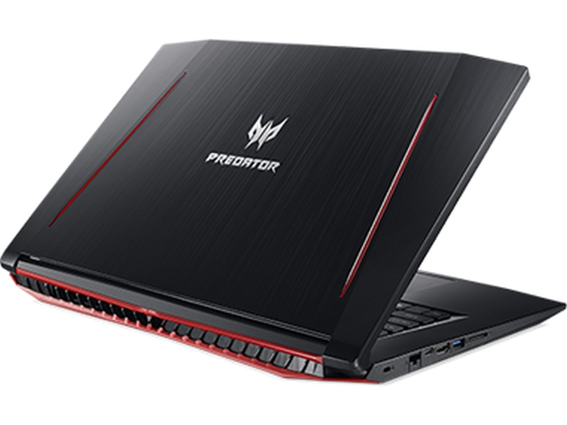
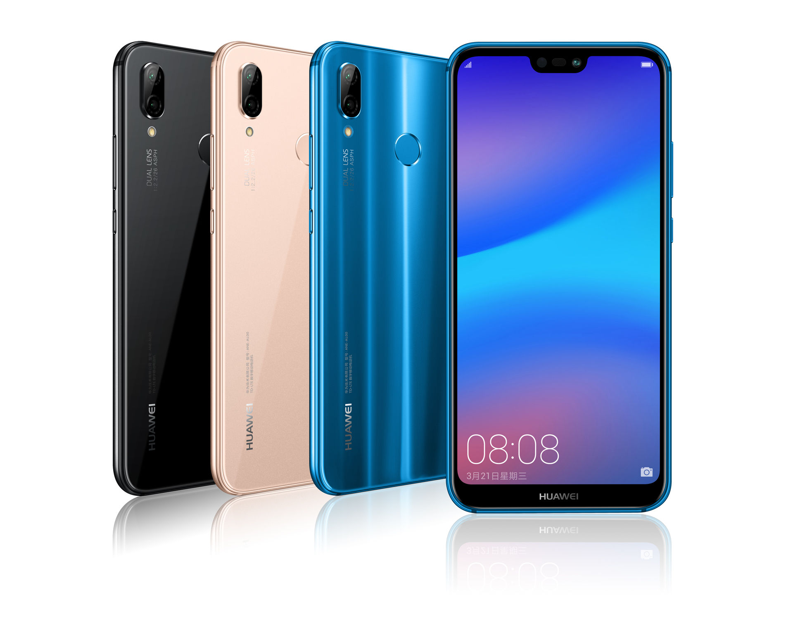

Bluetooth(Kékfog)

A Bluetooth
rövid hatótávolságú, adatcseréhez használt, nyílt, vezetéknélküli szabvány. használnak, hány szükséges - egy, kettő, nyolc vagy 25?
rövid hatótávolságú, adatcseréhez használt, nyílt, vezetéknélküli szabvány. használnak, hány szükséges - egy, kettő, nyolc vagy 25?
Ahonnan szereztem ezt az információt: https://hu.wikipedia.org/wiki/Bluetooth
Laptopok

A laptopok hordózható gépnek felelnek meg. Bár általában nem tudnak annyi adatot tárolni, mint egy asztali számítógép, sokszor sokkal hasznosabbak.
Ahonnan szereztem ezt az információt: https://pillangosziv-pillangosziv.blogspot.com/2017/01/laptop-szetszedese-hazilag.html
Telefonok

Első lépés:
A Huawei napjaink egyik legnépszerűbb androidos készülékei közé tartozik. Nem csak a kiváló árfekvése, de a kellően erős hardver és megfelelő funkcionalitás emeli ki a tengernyi készülék közül. A népszerűség egyik velejárója, hogy a használat során akár egy óvatlan mozdulatsor a készülék véletlen sérülését eredményezi. Ilyenkor jövünk mi a képbe, és legjobb tudásunk szerint igyekszünk a problémát megoldani.
A Huawei napjaink egyik legnépszerűbb androidos készülékei közé tartozik. Nem csak a kiváló árfekvése, de a kellően erős hardver és megfelelő funkcionalitás emeli ki a tengernyi készülék közül. A népszerűség egyik velejárója, hogy a használat során akár egy óvatlan mozdulatsor a készülék véletlen sérülését eredményezi. Ilyenkor jövünk mi a képbe, és legjobb tudásunk szerint igyekszünk a problémát megoldani.
Ahonnan szereztem ezt az információt: https://lcdfix.hu/cikk/huawei-p8-szerviz